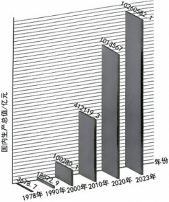
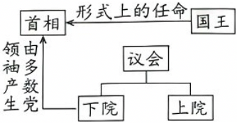

2025年北京市西城区中考历史试卷 · 选择题 第11、12、13、14、15题
11．（1.5分）如图《中国国内生产总值变化情况》数据图可以用来研究（ ）
①社会主义建设艰辛探索
②新中国外交事业的成就
③当代中国社会巨大发展
④市场经济推动国力增强

A．①②B．②④C．①③D．③④
12．（1.5分）拜占庭帝国在翻译和注释欧洲古典作品过程中，保护了大量的古典希腊罗马著作并形成规范的译本体系。由此可知，拜占庭帝国（ ）
A．为文艺复兴提供了精神营养
B．推动了西方法律体系的建设
C．直接促进西欧各地城市发展
D．成为联系东西方经济的桥梁
13．（1.5分）“从前，世界上发生的各种事情彼此间没有任何联系。每一种活动仅引起当地人的注意。但自那以后，一切重大事件都开始联结为一个整体”。与上述“自那以后”对应的事件是（ ）
A．查理曼帝国一分为三B．新航路的开辟
C．资本主义制度的确立D．早期殖民掠夺
14．（1.5分）君主立宪制是世界近代以来重要的政治体制之一。如图是有同学对某一国家政体设计的结构图示。该国是（ ）

A．英国B．美国C．法国D．俄国
15．（1.5分）工业革命使工业化国家发生了重大变化。变化包括（ ）
①奠基近代科学
②人口增长迅速
③推广大众教育
④贫富分化加剧
A．①②③B．①②④C．①③④D．②③④